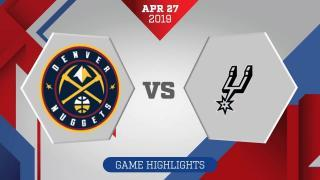

Tim Duncan
前锋/中锋

Nested media heading
Nested media heading
| 赛季 | 球队 | 时间 | 得分 |
|---|---|---|---|
| 15-16 | SAS | 25.2 | 8.6 |
| 14-15 | SAS | 28.9 | 13.9 |
| 13-14 | SAS | 29.2 | 15.1 |
| 12-13 | SAS | 30.1 | 17.8 |
| 11-12 | SAS | 28.2 | 15.4 |
- 资料
- 生日：1976年4月25日
- 国籍：美国
- 选秀：1997年第一轮第一顺位被马刺选中
- 来自：维克森林大学
- 荣誉与奖项
- 23 x 周最佳球员
- 3 x 月最佳球员
- 6 x 月最佳新秀
- 2 x MVP
- 3 x 总决赛MVP
- 5 x 总冠军
- 1 x 全明星MVP
- 15 x 全明星
- 1 x 全明星投篮之星冠军
- 10 x 最佳阵容第一阵容
- 3 x 最佳阵容第二阵容
- 2 x 最佳阵容第三阵容
- 8 x 最佳防守阵容第一阵容
- 7 x 最佳防守阵容第二阵容
- 1 x 最佳新秀
- 1 x 最佳新秀阵容第一阵容
- 1 x 奥运会铜牌
- 1 x 最佳队友奖
Player BIO
Son of Frank and Diane … First dunked a basketball in sixth grade … Captured the Slam Dunk competition at the McDonald's All-America game, getting perfect scores on his last two dunks … In his final dunk labeled " tap the baby," he bounced the ball off the glass, tapped the board with one hand and dunked with the other … Scored 10 points on 5-for-10 shooting for the West squad at the McDonald's All-America game ... Was also named to USA Today's 2008 All-USA Second Team and invited to play in the Jordan Brand Classic at Madison Square Garden … Scored a team-high 17 points to help lead Team USA to a 98-78 win vs. the World Select Team at the 11th Annual Nike Hoop Summit in Portland in April 2008.